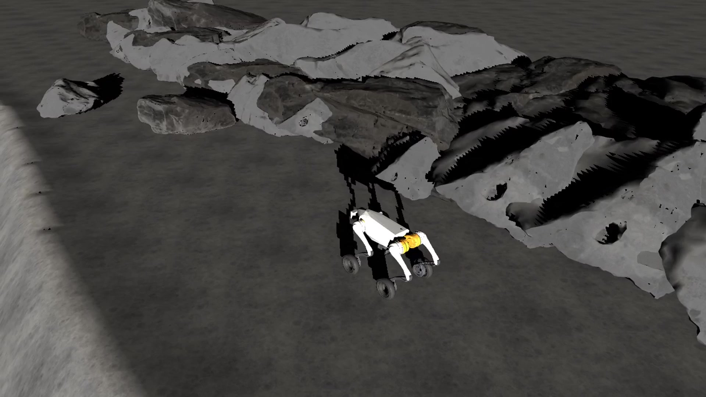
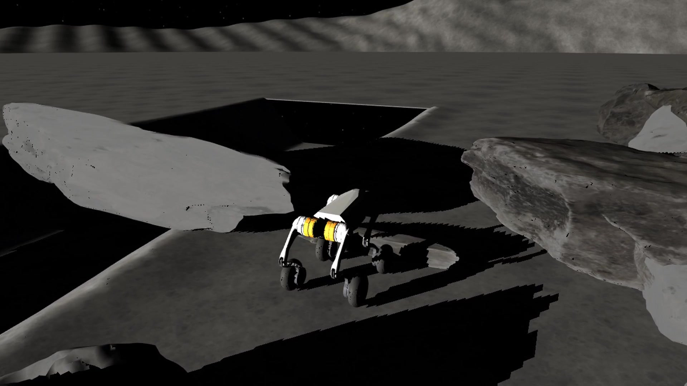
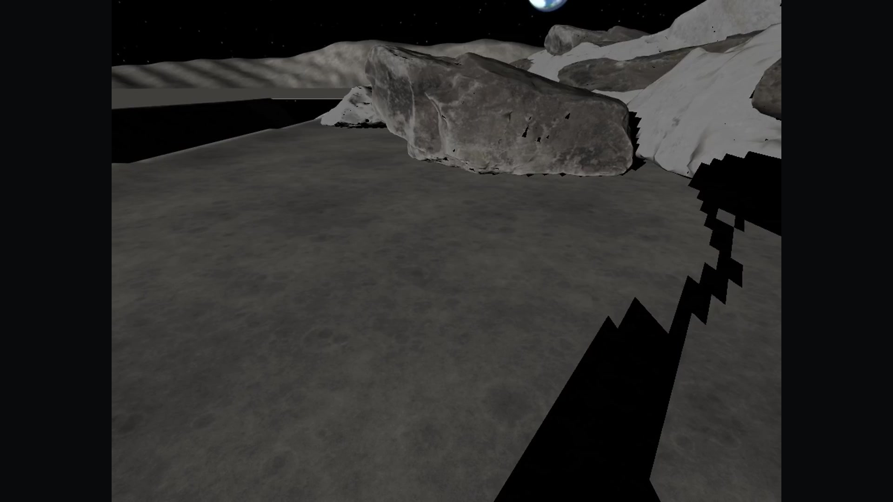
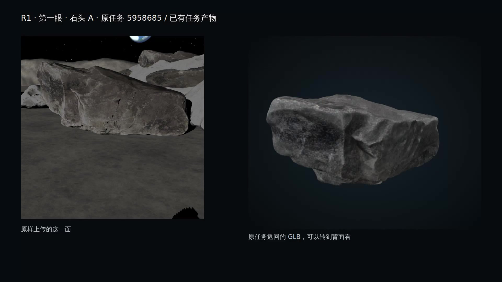
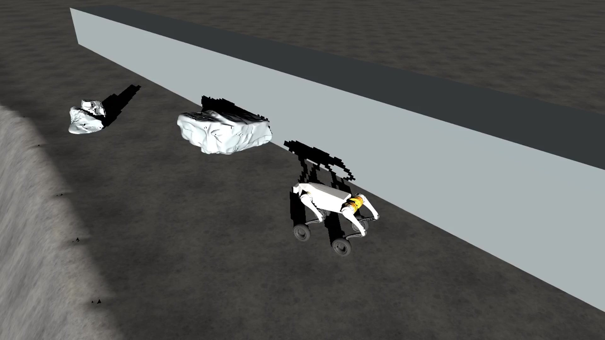
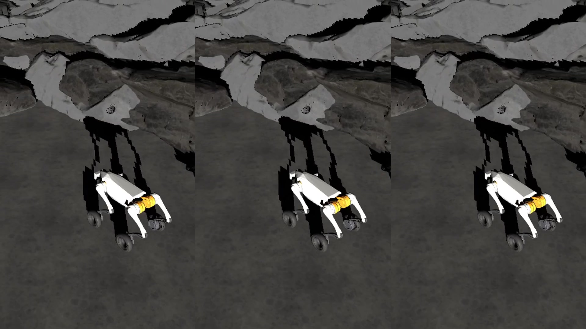
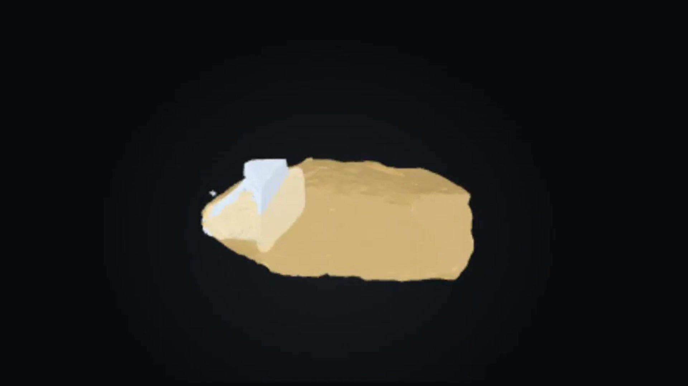
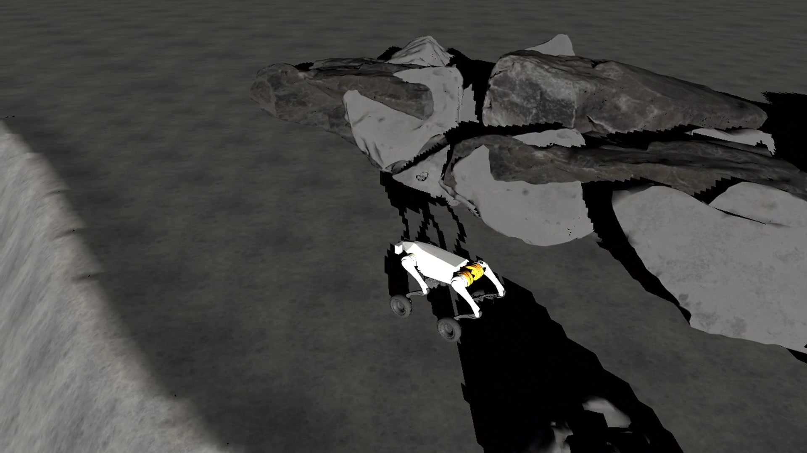

机器人原仿真记录 / 实录展示
先在假设里走一步。
看它在哪里受阻，怎样抬腿，如何先试走，再绕过去。
视频暂时未能加载。封面仍保留，可以通过“下载视频”打开原文件。
前往目标点。先看清这条路。
直冲保守先想象
R1 / stress_v8 / 原运行状态回放
查看这一段的来源
画面来自原运行的实际状态与相机记录。
原时间、机位与文件记录 ↗影片章节
从动作，看到判断。
点一个真实片段，直接回到影片中的这一段。

00:00前往目标点15 秒 · R1 / stress_v8
00:15低石：轮行受阻，逐轮跨越20 秒 · stress_v8_gate / 独立预检查
00:35R1：第一眼看见什么18 秒 · R1 / stress_v8
00:53已有任务返回的原模型22 秒 · R1 / stress_v8
01:15十二个实体预演世界30 秒 · R1 / stress_v8
01:45三策略：同一条仿真时钟42 秒 · R1 / stress_v8
02:27成功的边界与另场失败16 秒 · R1 + 另场 F3_004
02:43连续到达尾段17 秒 · R1 / stress_v8继续观看与核对
先看过程，再看依据。
这些画面是 MuJoCo 原运行记录的回放拍摄。没有新增实验，也没有实机或采样动作。低石预检查、R1 与 F3_004 在片中各自标明。